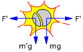

|

El sistema no está aislado porque sobre el proyectil y sus fragmentos
actúa la fuerza peso (Exterior).
Pero ocurre que el peso es despreciable en comparación con las
fuerzas internas de la explosión, así que el sistema prácticamente
está aislado mientras dura la explosión y el momento
lineal se conserva
|